Vama AI chat assistant
Conceptualising the AI features of Vama, to enhance efficiency in messaging.
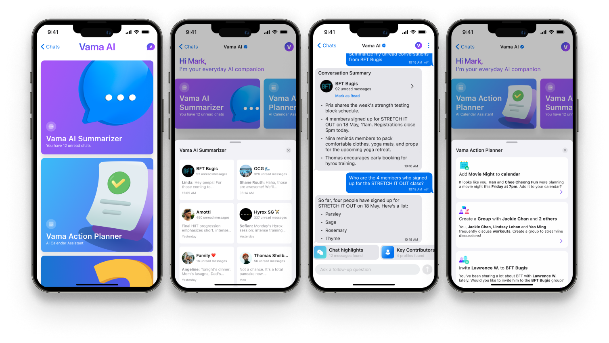
Introduction
This case study focuses on the design of Vama AI, an intelligent assistant integrated into our chat platform to enhance productivity and streamline communication. The goal was to explore how AI could help users manage information overload and stay organised within the chat interface. As this was an early-stage concept, we focused on wireframes and high-fidelity designs to quickly visualise and communicate the core ideas.
Exploring ideas through wireframing
Two key challenges - managing unread messages and improving message organisation, were identified by the product manager and our technical stakeholders as areas where AI could add the most value. Based on these priorities, I designed two AI-powered features: Quick message summaries and Suggested actions. Below is a breakdown of each problem, the proposed solution, and my initial low-fidelity design concepts.
Quick message summaries
The problemUsers often face message overload, making it hard to keep up with important updates and conversations.
By using AI to summarise unread messages, we can help users quickly catch up on key information, saving time and reducing cognitive load.
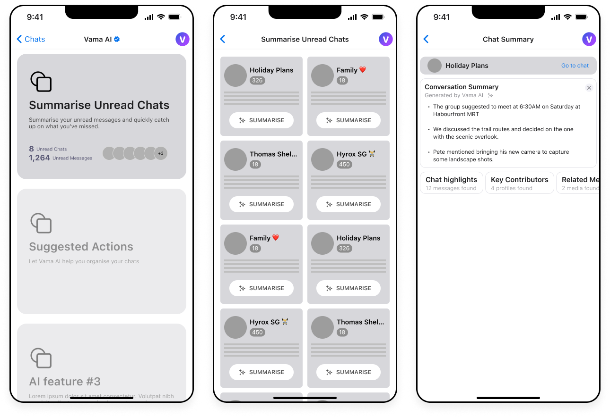
Suggest actionable tasks
The problemCluttered and lengthy chat threads make it difficult for users to keep track of key information and actionable items.
By offering AI-powered "Suggested Actions", we can provide users with relevant tasks like categorising messages, setting reminders, or creating calendar events. This helps users stay organised and maintain a tidy conversation flow.
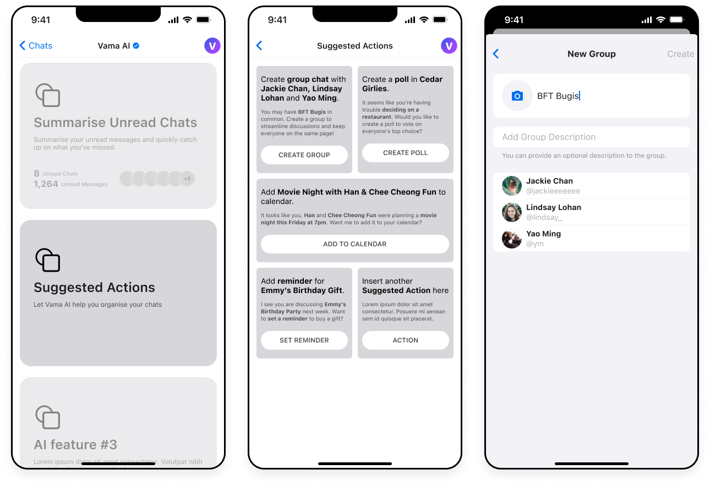
From concepts to hi-fidelity mockups
After several rounds of ideation, our stakeholders aligned on the initial wireframes, which gave us the green light to move into high-fidelity mockups. The designs below reflect early explorations of the two AI features discussed earlier. These are still in progress and subject to refinement as we continue to explore and validate ideas.
Accessing Vama AI
After some discussion, we decided on two ways to access Vama AI:
1. Vama AI Icon: Users can click on the icon at the top of the screen to directly access the main Vama AI interface. This provides a quick and easy way to explore all AI features and options.
2. Chat with Vama AI: Users can also initiate a chat with Vama AI. This allows them to quickly ask any question directly within the chat, providing instant assistance.
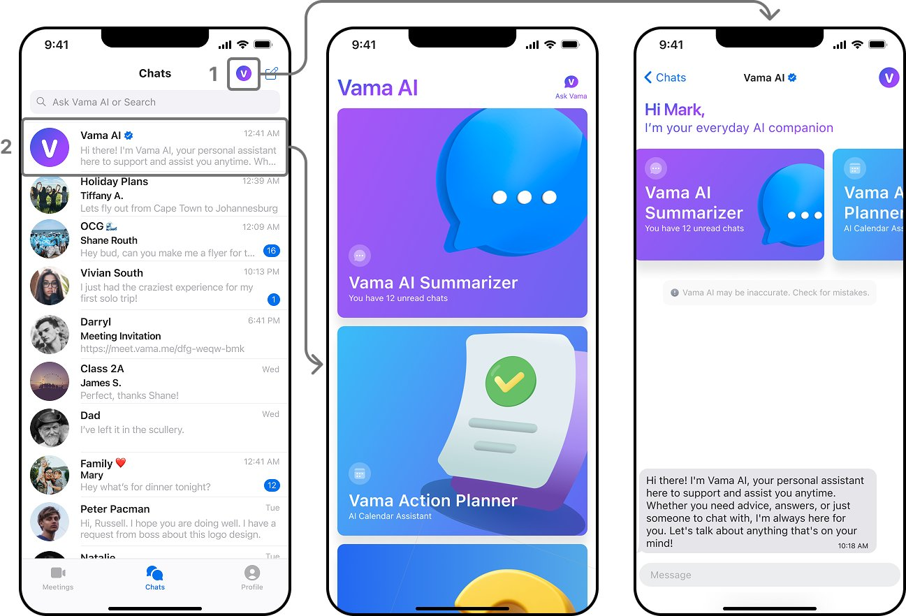
The Summariser feature
When the user clicks on the Summariser feature, a pop-up slides up from the bottom displaying a preview of all unread chats. This preview includes the group/profile avatar and name, the number of unread messages, and a snippet of the last message sent in each chat.
When the user clicks on any of these cards, the AI begins generating a summary of that chat. Once the summary is ready, the user can choose to mark the chat as read or go directly into the chat.
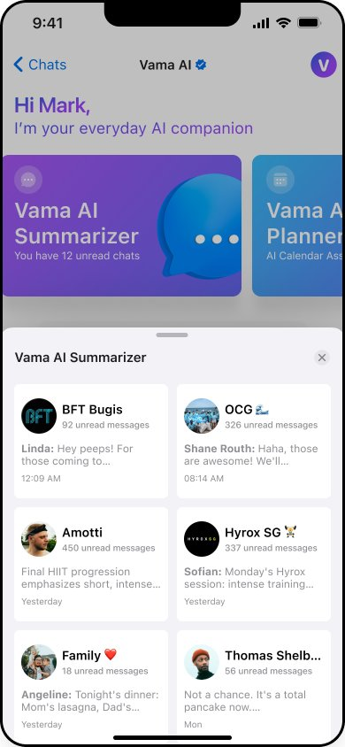
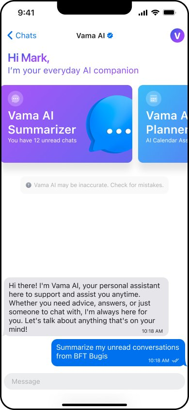
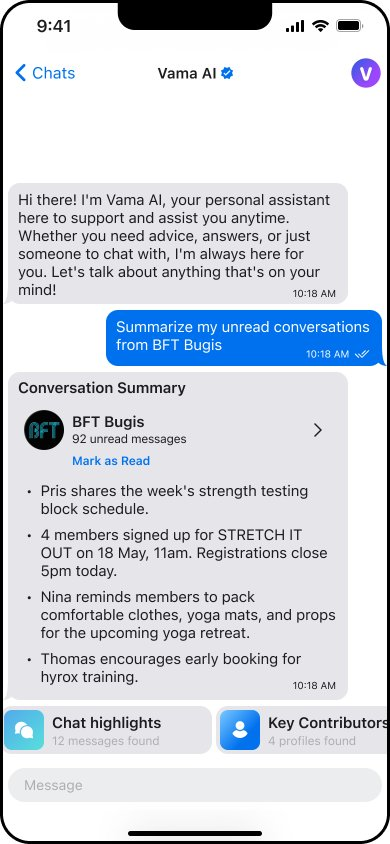
Additional interactions following message summary
I added new prompts to appear after the Conversation Summary is generated. These include features like Chat Highlights and Key Contributors.
Users can also continue chatting with Vama AI and ask questions if they wish.
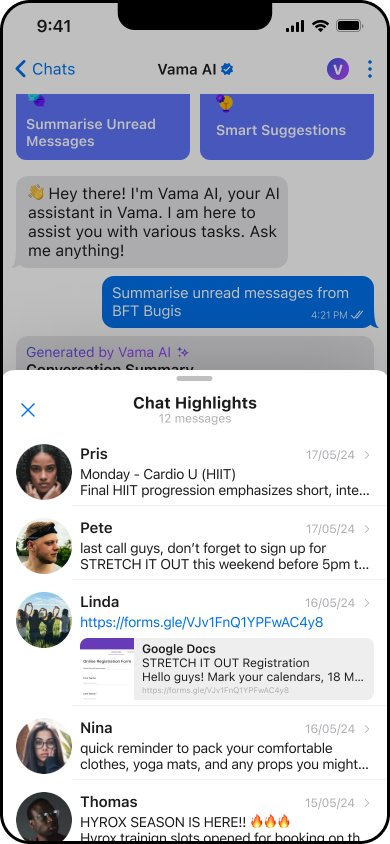
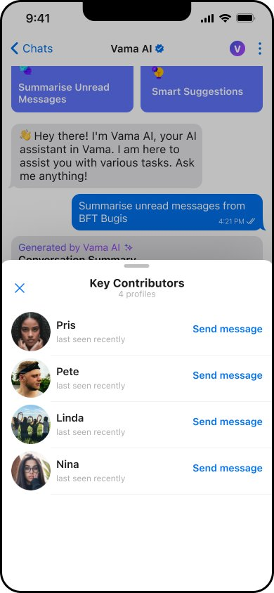
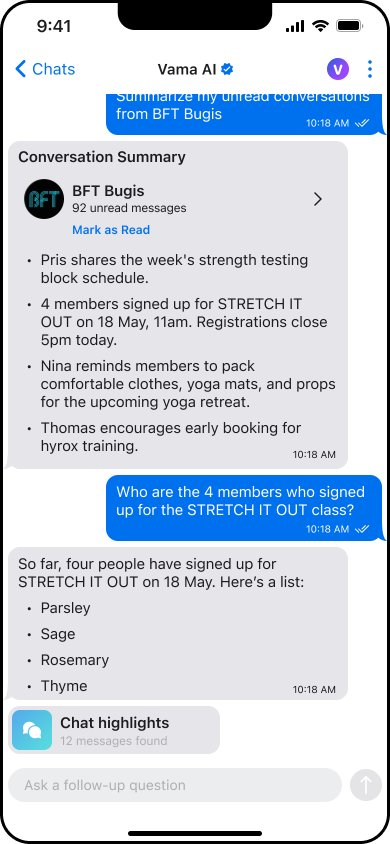
Prototyping the Vama AI Summarizer
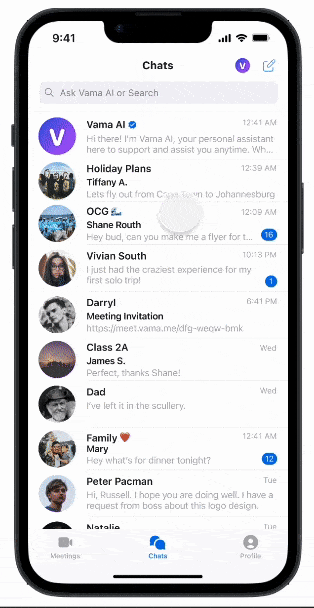
The "Action Planner" feature
At the top of the Vama AI chat screen, users can slide along the carousel to select the "Vama AI Action Planner."
Once selected, a pop-up displays recommended actions, including calendar suggestions, group organisation, setting reminders, and more.
When users choose an action, tasks are automated with pre-filled text, dates, times, and contacts. For calendar suggestions, I designed it to open Google Calendar as we don't have a Vama Calendar yet.
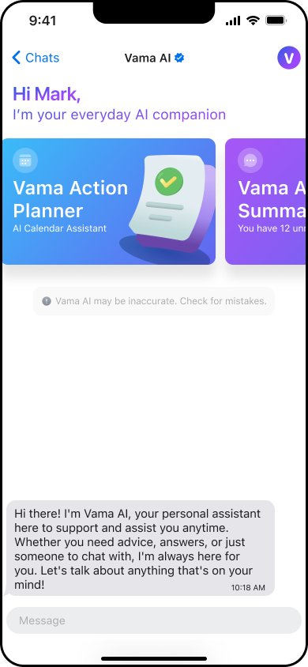
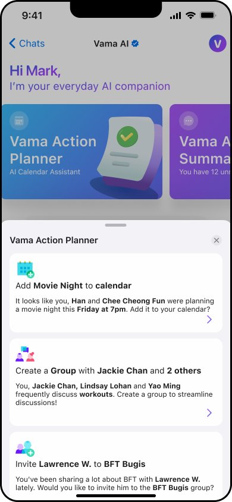
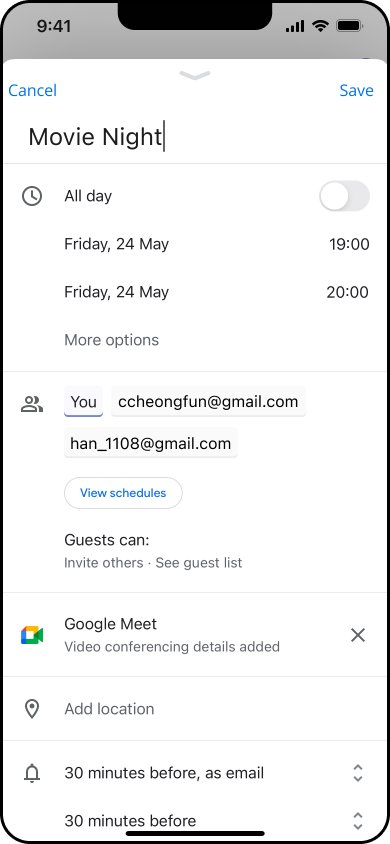
What's next?
This project was an opportunity to explore how AI can enhance productivity within a chat interface. Through rapid wireframing and high-fidelity design, we translated early feature ideas into tangible concepts that address real user pain points. While the designs are still evolving, they lay the groundwork for future iterations as we continue to refine the experience based on feedback and testing.